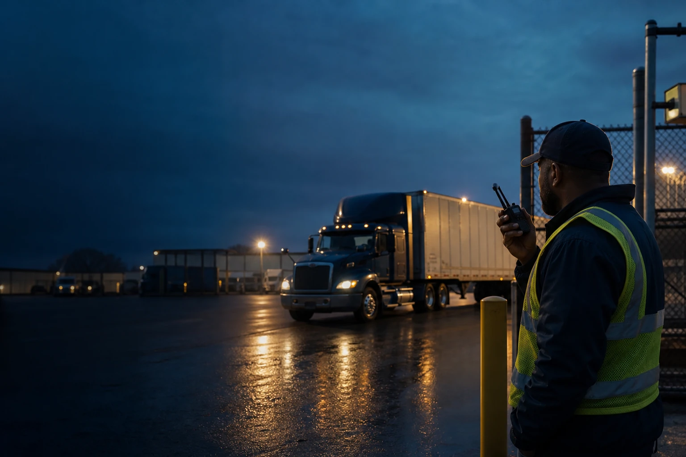
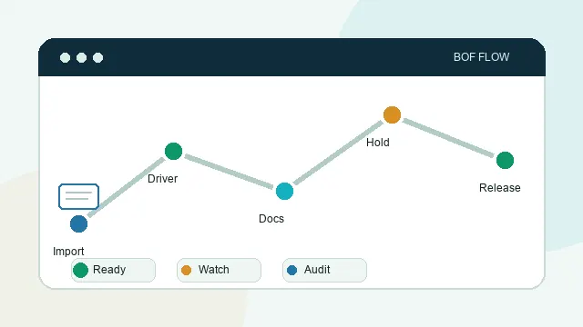
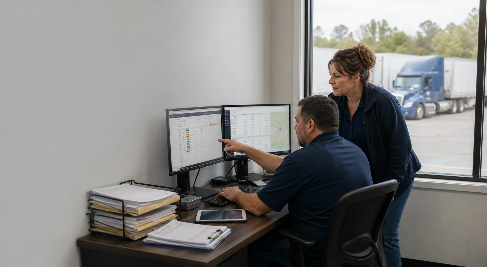

trucking fleets that need clearer back-office follow-through

The operating layer behind the load
Know what can move before the wheels turn.
BackOfficeFleet gives trucking teams one disciplined record for readiness, documents, exceptions, and accountable release decisions.
Named readiness stateEvidence tied to the recordClear owner and next action
ready, watch, and hold records with owners attached
driver, carrier, documents, exceptions, settlement, claims, audit, and next action
From review to release
The operating record connects the desk to the next move.
BOF keeps the evidence, named blocker, owner, and next action together so a release decision can be understood without searching across the operation.
- 01Record review
Evidence is gathered against the work that is about to move.
- 02Named decision
Ready, watch, or hold is visible with an accountable owner.
- 03Next move
The operating team sees the required action before the handoff disappears.
The operating handoff
People, equipment, and evidence stay connected to one decision.
The desk establishes what is ready, what is held, and who owns the next action. The fleet move carries that decision forward, with the same evidence and owner still attached.
Operating lifecycle
BOF follows the trucking company workflow from driver readiness to business operations.
The structure is simple: drivers become ready, documents become readiness signals, readiness supports dispatch, safety and compliance stay connected to the trip, proof supports settlement, and settlement records feed the business office.
Drivers
Driver files, DQF records, onboarding status, and expirations show whether a person can support the work.
Open DriversDispatch & Operations
Load intake, document readiness, release gates, exception notes, and operating records help dispatch know what can move.
Open DispatchSafety & Compliance
Pre-trip, in-route, post-trip, cargo securement, and compliance records stay connected to the operating decision.
Open SafetySettlements & Billing
PODs, lumper receipts, delivery photos, claim evidence, and billing packets show why a record is ready, review, or held.
Open SettlementsBusiness Operations
HR, payroll administration, customer billing, receivables, documents, and reporting carry the trip record into the office.
Open Business OperationsPolicies & Procedures
Policies and procedures give the operating team a central reference without promising legal, compliance, or cybersecurity outcomes.
Open PoliciesOperating proof
BOF is easiest to understand when a fleet owner can see the records behind the decision.
The value is not another truck photo or generic dashboard. BOF shows whether the driver is eligible, whether dispatch can trust the load, and whether the documents are complete enough to release, settle, or defend the work.

Animated readiness flow
The release story now moves like an operating chain.
The animated flow ties partner import, driver readiness, document review, audit trail, and release decision into one visible sequence.

Fleet office review
Real operating conversations start at the record desk.
BOF should feel grounded in the daily review work: monitors, driver packets, load status, and the paper trail a fleet owner already expects the office to control.


Drivers are ready before they move freight.
Driver files show DQF score, CDL/license image, medical card, MVR review, requests, history, owners, and dispatch consequence.
Open driver records
TMS-LD-10482Review
BOF-1931Hold
BOF-2064Ready
BOF manages operational execution.
The Command Center connects load status, driver, carrier, document gate, priority, owner, next action, and release consequence.
Open dispatch board
BOL image review
DQF review
POD + photos
Settlement packet
Documents & compliance
Every document is attached to a consequence.
BOF surfaces the paperwork a fleet owner asks to inspect: driver packets, compliance exceptions, settlement holds, POD proof, and claim-ready evidence.
Open document records Open settlementsOperating layer
BOF gives the owner a cleaner answer before dispatch trusts the work.
Start with one load, driver file, carrier packet, document hold, POD issue, or release blocker. BOF organizes the record chain so the team sees what is cleared, what is still waiting, and who handles the next move.
Record-backed decisions
Driver, carrier, document, POD, exception, and audit records stay attached to the release decision.
Managed follow-through
BOF keeps the owner, blocker, consequence, and next action visible so back-office work does not depend on memory.
Who BOF serves
BOF is built for teams that need back-office work tied to real operating records.
Different fleets and operating businesses feel the pressure in different places. BOF keeps the focus on driver readiness, document control, settlement support, proof packets, administrative visibility, and the next action the team can trust.
Trucking Fleets
Driver records, load intake, PODs, settlements, factoring packets, HR, and finance support.
Open trucking fleet servicesPrivate Fleets
Internal fleet readiness, driver documentation, operating records, and administrative visibility.
Open private fleet pathGovernment Fleets
Driver and equipment records, document readiness, audit trails, and operating-policy visibility.
Open government fleet pathAggregators
Carrier readiness, document structure, operating-unit visibility, and network assessment.
Open aggregator pathBusiness Operations
HR and Finance support for operating businesses, including recruiting, onboarding, payroll coordination, AP, AR, reporting, factoring, and cash-flow visibility.
Open business operationsWhat BOF proves
Designed around the records a fleet owner actually asks to see.
A fleet owner does not need another vague dashboard. They need to open a driver file, see the POD, inspect the packet, understand the priority, and know who is responsible for the next action.
- Driver records show eligibility instead of just a name on a load
- Documents stay readable, enlarged, and tied to release consequence
- Priority labels explain high, medium, and low operating impact
Exception ownership
BOF names the owner, blocker, next action, and consequence when a partner import is not release-ready.
Settlement hold context
Bank setup, W-9/I-9 status, and release-sensitive holds stay attached so back-office follow-up survives dispatch.
Open settlementsClaims packet support
POD, lumper receipt, seal photo, delivery proof, and claim evidence can stay visible as post-trip readiness records.
Audit-ready decision
The document records show believable paperwork tied to BOF-RR-10482, with the fields, owners, dates, and decision note a fleet team expects to review.